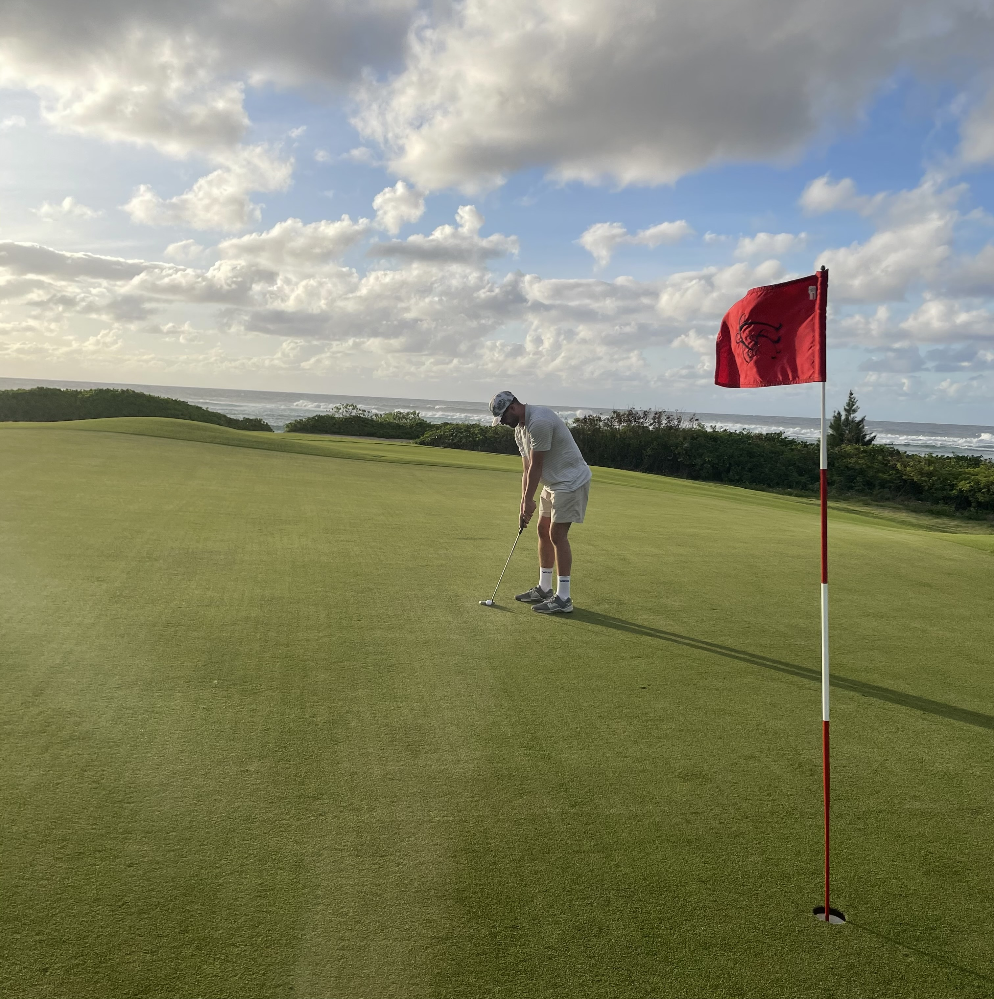
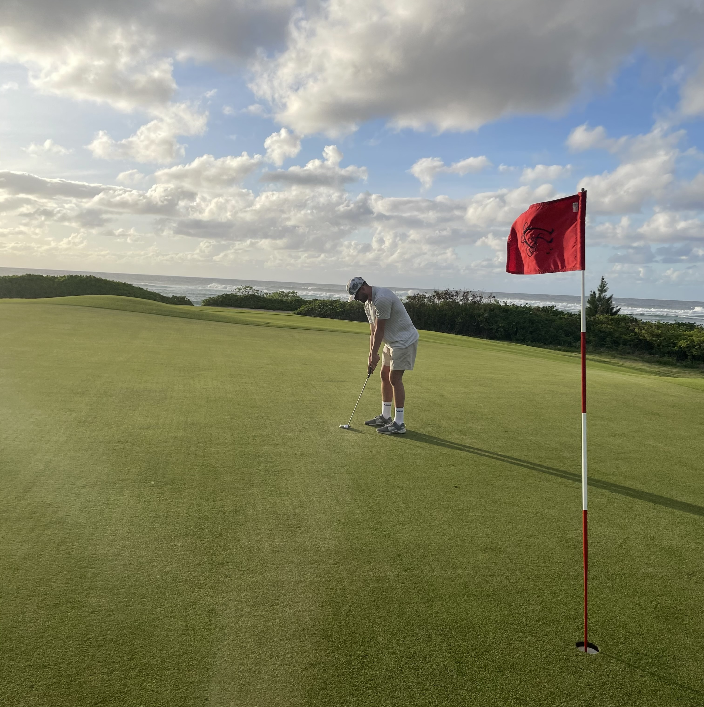

Alpine Skiing

A Memorable Run
My favorite memory from alpine skiing was the first time I successfully made it down a real black diamond run. It was a freezing cold morning at Mont Tremblant in Quebec, and I remember standing at the top of the slope feeling terrified. The run was steeper and faster than anything I had tried before, and the snow was fast that day. I took a deep breath, swallowed my fear, and pushed off, I could feel my skis carve smoothly into the snow, the wind rushing past my face, and my confidence growing with every movement. By the time I reached the bottom, my heart was racing, and I couldn't stop smiling.
That moment stands out because it was a personal breakthrough. I had overcame my fears and pushed myself beyond my comfort zone, I proved to myself that I was capable of hitting the harder runs if I had the confidence to do so. The sense of accomplishment I felt at the bottom of that run was unlike anything else; it's a constant reminder of why I love skiing so much. It's not just about speed or skill; it's about challenge, growth, and the pure joy of being surrounded by the beauty of the mountains.
Why Skiing Matters to Me
Skiing is my go-to winter passion because it combines adrenaline, skill, and the beauty of nature all at once. I remember my first real run down a steep slope—it was both terrifying and exhilarating, but by the end, I couldn't stop smiling. I didn't want the run to stop so I kept taking the lift to the top and trying different and harder runs than the last. The feeling of gliding through fresh powder with snowflakes falling around me is unmatched. Each trip to the mountain is an adventure, from riding the lift with friends to carving turns down wide, open trails. Skiing is important to me because it connects me to the outdoors and gives me a sense of freedom that's hard to find elsewhere. It also pushes me to face challenges head-on, improve my technique, and embrace the rush of going outside my comfort zone. Every winter, I look forward to those moments on the slopes where everything else fades away, and it's just me, the mountain, and the motion.
Golf
 

The Perfect Round
One of my favorite memories from golf was one of the first times I played a full 18-holes. It was a beautiful summer morning, and I was out on the course with a few friends. For the first few holes, my shots were inconsistent—I was slicing drives and missing easy putts—but I stayed patient and focused on improving with each swing. Then, on the back nine, I hit one of the best drives of my life. The ball sailed straight down the fairway and landed right in the middle setting up an easy layup shot. I followed it up with a clean wedge onto the green and sank an easy putt for birdie. The feeling of watching that putt drop was unforgettable, it was my first ever birdie!
What made the moment special wasn't just the score, it was the sense of progress, the feeling that comes from seeing hard work pay off. My friends cheered, and we all laughed about how I'd been struggling just an hour earlier. That round is a reminder of why I love golf so much: it's a game of patience, persistence, and small victories that build over time.
Why Golf Matters to Me
While I didn't grow up golfing it has quickly become one of my favorite hobbies. It challenges me both mentally and physically while giving me a chance to spend time outdoors. I love the feeling of stepping onto the course early in the morning when the grass is still covered in dew and the air is calm. Every hole presents a new puzzle to solve—choosing the right club, judging distance, and adjusting for wind or slope. Golf is important to me because it helps me stay grounded and focused. It teaches me to control my emotions, think strategically, and enjoy steady improvement over time. Whether I'm playing a solo round or golfing with friends, it's a way for me to unwind, reflect, and challenge myself at the same time.